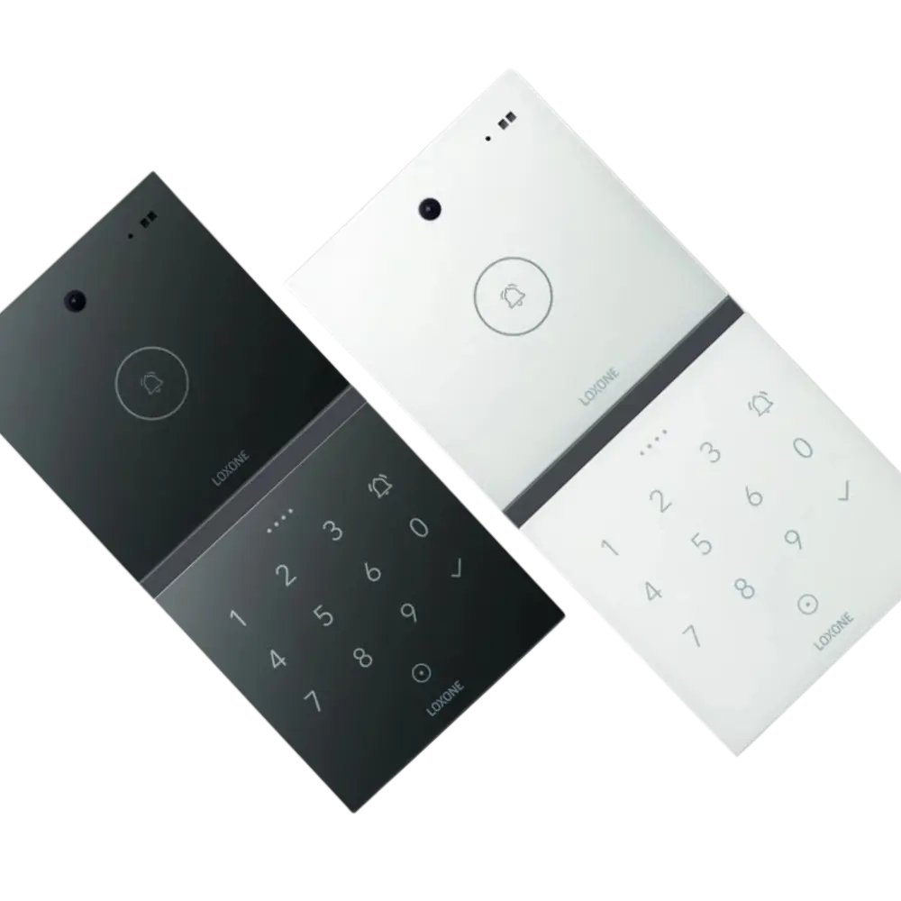
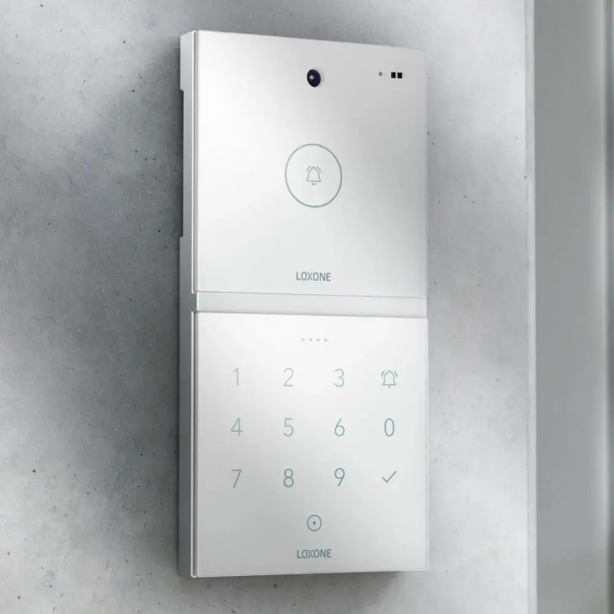

Ranní odchod
Dveře, branka nebo vrata reagují rychle a bez zbytečných kroků navíc.
Interkom a přístupový systém navrhujeme jako přirozenou součást bezpečnosti i každodenního provozu. Přehledný vstup, jasná identifikace a pohodlné ovládání z jednoho místa.

Vstup do objektu musí být bezpečný, rychlý a srozumitelný. Řešíme nejen dveřní komunikaci, ale i návaznost na bránu, alarm a vzdálenou správu.

Typické situace u vstupu
Přístupový systém nemá fungovat jen při předání. Musí být rychlý, přehledný a spolehlivý při každodenním provozu objektu.
Dveře, branka nebo vrata reagují rychle a bez zbytečných kroků navíc.
Uživatel má okamžitý přehled, kdo stojí u vstupu, a může reagovat odkudkoliv.
Přístup lze vyřešit pohodlně bez zbytečného čekání a improvizace.
Vstupní logika může navazovat na bránu, vrata i další prvky v objektu.
Přístup funguje přehledně i za snížené viditelnosti a bez složitého ovládání.
Historie vstupů, návaznost na alarm a jasná logika zvyšují kontrolu nad objektem.
Provozní standard
Vstup do objektu musí být bezpečný a současně pohodlný. Důležitá je logika oprávnění, návaznost na bezpečnost a jednoduché ovládání.
Práva a způsob otevření nastavujeme podle reálného provozu domu nebo firmy.
Příchozí i události musí být vidět okamžitě a bez zbytečných kroků navíc.
Interkom a vstup propojujeme s kamerami, alarmem i automatizací objektu.
Oprávnění, historie i změny přístupů mají být čitelné a dlouhodobě udržitelné.
Systém lze doplnit o další vstupy, brány nebo uživatele bez ztráty logiky.
Uživatel musí od začátku vědět, jak systém funguje a jak s ním pracovat.
Výsledek pro uživatele
Větší kontrolu nad objektem, pohodlnější každodenní provoz a jasné napojení na bezpečnost celého domu.
Okamžitě víte, kdo zvoní, přichází nebo odchází.
Otevření a správa vstupu fungují z interkomu, aplikace i automatických scén.
Vstupy jsou napojené na alarm a kamery, takže systém reaguje jako celek.
Další brány, dveře nebo uživatele lze doplnit bez improvizace.
ZAČNĚME VSTUPEM, KTERÝ BUDE FUNGOVAT JASNĚ A BEZPEČNĚ